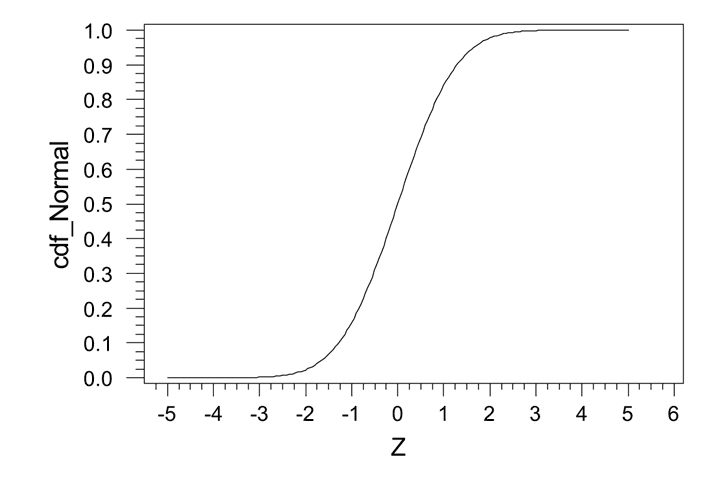

NormINV Function
The NormINV function returns the inverse of the Normal
Distribution Cumulative Distribution Function (CDF)
(See Image1).
The Normal Distribution CDF returns the probability of a normally
distributed value X≥x. The inverse of that would be, for a
given probability, what is a value X≥x. This Function is useful
for randomly assigning values that are normally distributed.

Image 1
Syntax
NORMINV(probability,mean,standard_deviation)
- probability is a number that is between zero and 1.
- mean is the mean of the normal distribution
- standard_deviation is the stadard deviation of the distribution
Restrictions:
Probability must be less than 1 and greater than 0, if it is not, a
parse error is raised.
All arguments must be numeric, if they are not, a parse error will be
raised
The standard deviation cannot be less than or equal to 0, if it is, a
parse error is raised.
Examples
| Expression |
Result |
| NormINV(.5,5,10) |
5 |
| NormINV(.99,5,10) |
28.26 |
| NormINV(.01,5,10) |
-18.26 |
Common Use
A common use of the expression is to use the Rand() function for the
probability. When NormINV uses the Rand() function for the
probability, each row within the column where the expression is used
randomly assigns a normally distributed value in the result of the
expression. (i.e. NormINV(rand(),5,10))